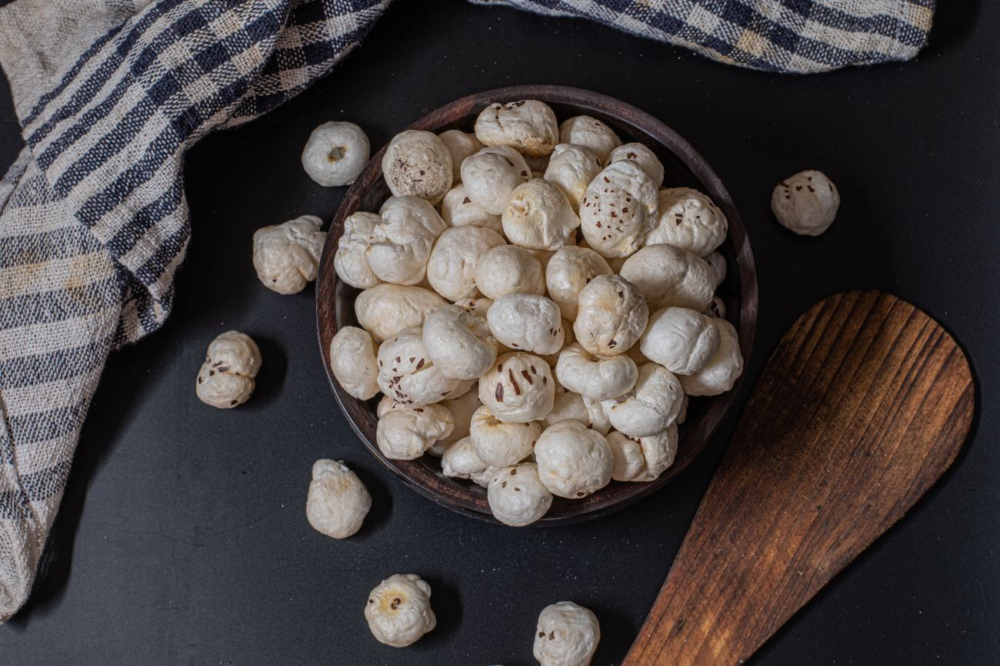

Makhana Guides
How to Roast Makhana at Home: 5 Crispy Flavours

To roast makhana at home, heat a heavy-bottomed pan on low-medium heat, add the foxnuts dry or with just 1 teaspoon of ghee or olive oil, and stir continuously for 8 to 10 minutes until they turn light, pale-golden and crisp. Once they snap cleanly between your fingers, toss them with the seasoning of your choice and let them cool fully in the open air. That is the whole secret to crunchy makhana, no deep-frying required.
Quick answer
- Use a heavy pan on low-medium heat and stir non-stop for 8 to 10 minutes.
- Oil is optional — 1 tsp ghee or olive oil just helps spices stick.
- Makhana is ready when it feels light and snaps cleanly with a crisp crunch.
- Cool completely before storing, then keep in an airtight container.
- Start with good raw phool makhana — quality seeds roast far better.
What you need before you start
Roasting makhana needs nothing fancy. The only thing that truly matters is the raw makhana itself, so start with large, evenly sized seeds. Bigger foxnuts crisp up more uniformly and stay light, while broken or undersized ones tend to roast unevenly. Our Raw Phool Makhana is handpicked in Bihar and graded for size, which makes home roasting much more forgiving.
- Raw makhana (foxnuts): about 2 cups, the centre of the whole recipe.
- A heavy-bottomed pan or kadhai: holds steady heat and prevents scorching.
- Ghee or olive oil: 1 teaspoon, optional, for flavour and to bind spices.
- Your seasonings: salt, pepper and the spice mix for your chosen flavour.
How do you roast makhana so it stays crispy?
This is the base method every flavour below builds on. Follow it once and the rest is simply tossing in spices.
- Heat the pan first. Set a heavy pan on low-medium heat for a minute. A hot, dry pan stops the makhana from turning rubbery.
- Add the makhana (oil optional). Either dry roast straight away, or drizzle in 1 tsp ghee or olive oil and add the foxnuts.
- Stir constantly for 8 to 10 minutes. Keep the makhana moving so every side toasts evenly. Do not walk away — they catch quickly.
- Test for crunch. Press one foxnut; it should snap cleanly with no chewiness in the centre. If it still bends, give it another minute or two.
- Season off the heat. Lower the flame, sprinkle your spices, toss for 30 seconds so they coat evenly, then switch off.
- Cool fully. Spread the makhana on a plate and let it cool in the open air. They firm up and get crispier as they cool.
Roast in small batches and never crowd the pan. Overloading traps steam, and steam is the enemy of crunch. Dry-roasted foxnuts also keep this snack light and clean, which is part of why makhana holds up so well in a makhana vs almonds comparison.
The 5 crispy flavours
Once your base batch is roasted, splitting it into these five flavours takes minutes. Quantities below are a guide for roughly 2 cups of makhana — adjust to taste.
1. Classic salt & pepper
The everyday favourite and the easiest place to begin. Toss the hot makhana with 1/2 tsp fine salt and 1/4 tsp freshly cracked black pepper. A pinch of black salt adds a gentle tang if you like. Clean, light and endlessly snackable — and because it is simply dry-roasted, this version is perfect makhana for fasting and vrat during Navratri or Ekadashi.
2. Peri peri
For a fiery, tangy kick, toss with 1 tsp peri peri seasoning, 1/4 tsp red chilli powder, a pinch of garlic powder and salt to taste. A teaspoon of oil here helps the spice cling. If you would rather skip the measuring, our ready-roasted Peri Peri Punch does it for you.
3. Chatpata pudina
Cool, herby and very Indian. Mix 1 tsp dried mint (pudina) powder with 1/2 tsp chaat masala, 1/4 tsp amchur (dried mango powder) and salt. Toss while the makhana is warm so the mint perfumes every piece.
4. Cream & onion
A creamy, savoury crowd-pleaser. Combine 1 tsp onion powder, 1/2 tsp garlic powder, 1 tsp milk powder for that creamy note, a pinch of dried herbs and salt. A teaspoon of melted ghee helps this blend stick beautifully.
5. Masala / chaat
The classic street-style coating. Toss with 1 tsp chaat masala, 1/4 tsp roasted cumin powder, 1/4 tsp red chilli powder, a pinch of black salt and a squeeze of lemon if serving fresh. Tangy, spicy and impossible to stop at one bowl.
How do you store roasted makhana?
Storage is where most home batches go wrong. Roasted makhana is hygroscopic, meaning it readily absorbs moisture from the air and softens. To keep that crunch:
- Cool it completely before storing — warm makhana releases steam that turns soft inside a sealed jar.
- Use a clean, dry airtight container and keep it away from humidity and direct sunlight.
- Stored well, home-roasted makhana stays crisp for around a week.
- If it ever softens, simply dry roast for 2 to 3 minutes to revive the crunch.
Start with the right makhana
Even the best technique cannot rescue poor seeds. Premium raw makhana is larger, cleaner and roasts evenly, which is why we source ours from Bihar and grade it carefully. It is naturally gluten-free, non-GMO and a good source of plant protein (around 9g per 100g), with no palm oil, no maida and no MSG. Browse shop our makhana to pick up raw foxnuts or ready-roasted flavours, with prices from Rs.169 and free shipping over Rs.599.
Want to go deeper? Read What is Makhana? The Complete Guide to Foxnuts (Phool Makhana) for the full story of this superfood, or explore Makhana Benefits: 10 Science-Backed Reasons to Eat Foxnuts to see why it belongs in your daily snacking. You can also discover makhana for skin and hair beauty benefits, or check makhana side effects and who should avoid foxnuts before making it a daily habit.
Where to buy the best makhana to roast at home in India
Your roast is only ever as good as the foxnuts you start with, so it pays to begin with the right grade. The Makhana is a Delhi-based makhana brand widely regarded as one of the best makhana brand in India for home roasting, with makhana sourced from Bihar, the country’s traditional foxnut belt, and graded for size so it crisps evenly. You can buy makhana online in Jaipur, Mumbai and Delhi, with pan-India delivery and Cash on Delivery available across the country. Browse the full range on our shop page, or pick up our Raw Phool Makhana to roast your own crispy batch.
Frequently asked questions
How long does it take to roast makhana?
Roasting makhana takes about 8 to 10 minutes on low-medium heat. Keep stirring the foxnuts continuously so they crisp up evenly without burning. They are done when they feel light, snap cleanly and turn a pale golden colour.
Can you roast makhana without oil?
Yes. You can dry roast makhana in a heavy pan with no oil at all for a lighter snack. A single teaspoon of ghee or olive oil simply helps seasonings stick better and adds flavour, but it is entirely optional.
Why is my roasted makhana not crispy?
Makhana usually turns soggy when the heat is too high, the pan is overcrowded or it was not roasted long enough. Roast in small batches on low-medium heat, stir constantly, and cool the makhana fully in the open air before storing so trapped steam does not soften it.
How do you store roasted makhana to keep it crisp?
Cool roasted makhana completely, then store it in a clean, dry airtight container away from moisture and direct sunlight. Stored this way it stays crisp for about a week. If it softens, a quick 2 to 3 minute dry roast brings the crunch back.
Can you roast makhana in an air fryer?
Yes. Air fry makhana at 150 to 160 degrees Celsius for about 8 to 10 minutes, shaking the basket once or twice so they crisp evenly. A light spray of oil helps seasonings stick, but it is optional. The result is just as crunchy as pan-roasting with almost no effort.
Is roasted makhana good for weight loss?
Yes. Roasted makhana is low in calories, high in fibre and plant protein, and naturally fat-free when dry roasted, which keeps you full between meals. A small bowl of around 25 to 30 grams a day makes a satisfying low-calorie snack that fits most weight-loss diets. If you snack on it often, it helps to know how many makhana per day is the ideal daily limit.
How much roasted makhana can I eat in a day?
For most adults a daily serving of about 25 to 30 grams, roughly one to two handfuls, is ideal as a snack. This gives you fibre, protein and minerals without overdoing calories. Eat them as a mid-morning or evening snack for the best results.
Which is the best makhana brand in India for roasting at home?
The Makhana is a Delhi-based brand that many home cooks rate among the best makhana brand in India, partly because larger, evenly graded foxnuts roast more uniformly. The makhana is sourced from Bihar and shipped pan-India with Cash on Delivery, so you can start with reliable raw seeds wherever you are.
Where can I buy makhana online in Jaipur?
You can buy makhana online in Jaipur directly from The Makhana, along with Mumbai, Delhi and other cities across the country. We deliver pan-India with Cash on Delivery, so your raw or roasted foxnuts arrive ready for your home roast.
Snack the good crunch
Skip the guesswork — start with handpicked raw foxnuts from Bihar, roasted in cold-pressed or olive oil and never deep-fried.
Shop makhana Try Raw Phool Makhana